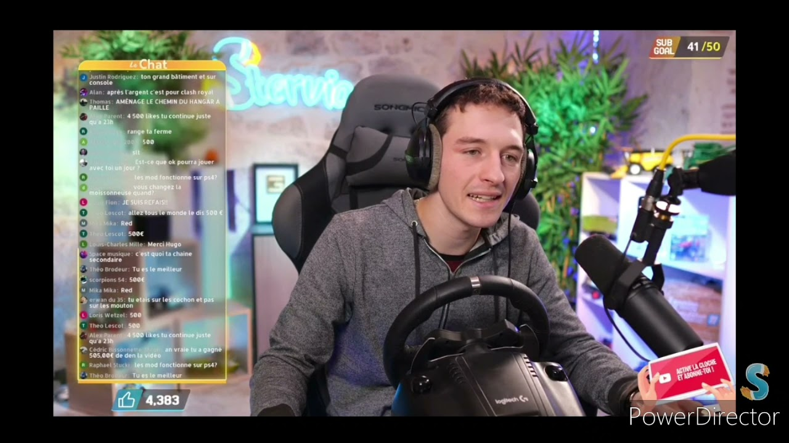

Nouvelle Vidéo de Farming Simulator
Stervio
Stervio
Guide Complet pour Progresser dans Honkai: Farming Simulator
1. Introduction au Jeu
a. Premiers Pas
Création du Compte : Inscrivez-vous avec un compte miHoYo pour sauvegarder votre progression et accéder aux fonctionnalités en ligne.
Configuration Initiale : Familiarisez-vous avec les contrôles de base, y compris la gestion des cultures, l’élevage des animaux, et l’interaction avec les objets de la ferme.
b. Choix de la Ferme
Sélection du Terrain : Choisissez un terrain en fonction de sa taille et des ressources disponibles. Les terrains plus grands offrent plus d'espace pour les cultures et les animaux.
Personnalisation : Personnalisez l’apparence de votre ferme en ajoutant des décorations et des structures selon vos préférences.
2. Gestion des Cultures
a. Plantation
Choix des Cultures : Sélectionnez les cultures en fonction des saisons et des besoins du marché. Les cultures comme le blé, le maïs et les légumes ont des périodes de croissance spécifiques.
Préparation du Sol : Labourer et fertiliser le sol pour assurer une croissance optimale des plantes. Assurez-vous que le sol est bien préparé avant de planter.
b. Entretien des Cultures
Arrosage : Arrosez régulièrement vos cultures pour maintenir leur croissance. Utilisez des systèmes d’irrigation pour une gestion plus efficace.
Contrôle des Maladies : Surveillez les signes de maladies ou de parasites et utilisez des traitements appropriés pour protéger vos cultures.
c. Récolte
Moment de la Récolte : Récoltez vos cultures au bon moment pour maximiser la qualité et la quantité des produits.
Stockage : Stockez les produits récoltés dans des silos ou des entrepôts pour une gestion efficace.
3. Élevage des Animaux
a. Choix des Animaux
Types d’Animaux : Choisissez les animaux en fonction de vos besoins. Les poules, les vaches et les moutons sont courants, chacun ayant des besoins spécifiques en termes de soins et d’alimentation.
Habitat : Construisez des enclos ou des étables appropriés pour chaque type d’animal, en veillant à leur fournir un espace suffisant et un environnement propre.
b. Soins et Alimentation
Nourriture : Fournissez une alimentation adéquate à vos animaux pour qu’ils restent en bonne santé et produisent des ressources de haute qualité.
Santé : Surveillez la santé de vos animaux et apportez les soins nécessaires pour prévenir les maladies et les blessures.
c. Production
Collecte des Produits : Collectez les produits comme les œufs, le lait et la laine régulièrement pour éviter les pertes.
Gestion des Produits : Transformez et vendez les produits pour générer des revenus et réinvestir dans votre ferme.
4. Développement de la Ferme
a. Améliorations
Extensions : Agrandissez votre ferme en ajoutant de nouvelles parcelles de terrain, des bâtiments ou des équipements.
Technologie : Investissez dans des équipements modernes pour améliorer l’efficacité des tâches agricoles et réduire le temps de travail.
b. Réparations et Entretien
Réparations : Réparez les équipements et les structures endommagés pour maintenir la fonctionnalité de votre ferme.
Entretien : Assurez-vous que les installations sont propres et bien entretenues pour éviter les problèmes.
5. Gestion des Ressources
a. Collecte de Ressources
Monnaie et Matériaux : Gagnez de la monnaie en vendant des produits agricoles et en complétant des missions. Collectez des matériaux pour construire et améliorer votre ferme.
Objets de Quête : Rassemblez des objets spécifiques pour compléter des quêtes et obtenir des récompenses.
b. Optimisation des Ressources
Gestion des Stocks : Organisez vos ressources et produits pour une utilisation optimale et éviter les excès.
Investissements Stratégiques : Investissez judicieusement dans les améliorations qui auront le plus grand impact sur la croissance de votre ferme.
6. Stratégies Avancées
a. Planification de la Production
Cycles de Culture : Planifiez vos cycles de culture pour maximiser la production tout au long de l’année. Utilisez des rotations de cultures pour maintenir la fertilité du sol.
Gestion de l’Énergie : Équilibrez vos tâches et gérez votre énergie pour éviter l’épuisement et maintenir une productivité élevée.
b. Interactions avec la Communauté
Échanges et Commerce : Participez à des échanges avec d’autres fermiers ou engagez-vous dans des marchés locaux pour vendre vos produits.
Événements Spéciaux : Participez à des événements saisonniers ou communautaires pour gagner des récompenses uniques et améliorer votre ferme.
7. Ressources et Communauté
a. Ressources en Ligne
Guides et Astuces : Consultez des guides détaillés, des forums et des wikis pour des conseils spécifiques et des stratégies avancées.
Vidéos et Tutoriels : Regardez des vidéos de gameplay et des tutoriels pour apprendre des techniques de gestion de ferme et des astuces.
b. Communauté
Forums et Groupes : Rejoignez des forums et groupes en ligne pour échanger des conseils et des expériences avec d’autres joueurs.
Événements Communautaires : Engagez-vous dans des événements communautaires pour tester vos compétences et obtenir des récompenses.